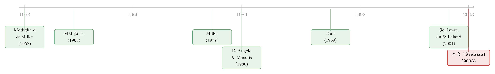

100% 借债，还是一分不借？——一篇综述，把「税」拧成公司金融的一根主线
本文读的是 Graham (2003, Review of Financial Studies) 的综述 Taxes and Corporate Finance: A Review：作者把资本结构、股利、薪酬、风险管理、组织形式这五大块公司决策，全部拧到同一根主线上——税收如何改变一项公司行为的「边际收益」，也就是那个反复出现的 \(\tau_C(\cdot)\) 收益函数。证据大体支持「高税率公司会去追逐税收好处」这个假说，但作者诚实地把一连串没解开的谜题摆在了台面上：税收效应到底是不是一阶重要？公司为什么不更激进地榨取税盾？投资者层面的税，究竟管不管用？
1 一个让人不舒服的极端结论
先从一个几乎所有人都学过、却又几乎没人真的相信的结论说起。
Modigliani 和 Miller (1958) 告诉我们：在一个完美、无摩擦的世界里，公司的融资决策无关紧要。要得到这个结论，他们假设了五件事——没有公司税和个人税、没有交易成本、信息对称、合约完备、市场完全。于是公司的价值，就等于它经营性现金流的现值，跟你用多少债、多少股权去支撑这些现金流，毫无关系。
这本是一个干净得近乎冷酷的基准（null）。真正有意思的，是把这五条假设一条条松开之后会发生什么。 Graham 这篇综述，从头到尾只松开了第一条：把税收请回来。
那么，第一步松开会怎样？MM 自己在 1963 年的那篇「更正文章」(correction article) 里给了答案，而这个答案极端得让人坐立不安。
2 模型：把「税盾」一步步算出来
要看清这篇综述的全部张力，得先把它反复使用的那套估值代数摊开来。综述里这套推导本身不算难，但它是后面所有故事的地基，值得一步一步走。
设公司所得税率为 \(\tau_C\)，利息可在税前扣除；投资者拿到利息、股息、资本利得时分别按 \(\tau_P\)、\(\tau_{div}\)、\(\tau_G\) 课税，其中股权层面的税常被合成一个混合税率 \(\tau_E\)。
第一步：一美元的「债」相对一美元的「股」，到底多值多少钱？ 公司付出 1 美元利息，投资者税后拿到 $\$1(1-\tau_P)$；如果这 1 美元改以股权收入的形式发出去，它要在公司和个人两个层面被课税，投资者只剩 $\$1(1-\tau_C)(1-\tau_E)$。两者相减，就是债务相对股权的净税收优势：
$$ (1-\tau_P) - (1-\tau_C)(1-\tau_E) \tag{1} $$
只要式 (1) 为正，投资者就更看重利息收入，公司也就有了用债代替股权的税收动机。
第二步：把它放大到整笔债。 一家公司若有 \(D\) 的债、票息率 \(r_D\)，每期净收益是
$$ \big[(1-\tau_P) - (1-\tau_C)(1-\tau_E)\big]\, r_D D \tag{2} $$
把所有当期与未来的利息抵扣折现，带债公司的价值就写成
$$ \text{Value}_{\text{with debt}} = \text{Value}_{\text{no debt}} + \mathrm{PV}\Big[\big((1-\tau_P) - (1-\tau_C)(1-\tau_E)\big)\, r_D D\Big] \tag{3} $$
第三步：MM (1963) 的极端结论从何而来。 令 \(\tau_P = \tau_E = 0\)，式 (3) 的第二项坍缩成 \(\mathrm{PV}[\tau_C r_D D]\)。MM (1963) 假设利息抵扣和产生它的债务一样有风险，应该用 \(r_D\) 折现；对永续债而言，
$$ \text{Value}_{\text{with debt}} = \text{Value}_{\text{no debt}} + \frac{\tau_C r_D D}{r_D} = \text{Value}_{\text{no debt}} + \tau_C D \tag{4} $$
看见那个 \(\tau_C D\) 了吗？这就是「税盾」。它有两个让人不安的含义：第一，债务的边际收益恒等于 \(\tau_C\)（常被当成一个正的常数），所以公司应该用 100% 的债 来融资；第二，公司价值随负债 \(D\) 线性上升。
顺带一提，式 (4) 把税盾的价值写成了 \(\tau_C D\)，仿佛「税盾价值 = 未来抵扣的现值」是天经地义的。其实这里藏着一个折现率的暗礁——一旦债务额不固定、而是盯住某个目标负债率，利息抵扣就带上了股权风险，该用资产回报 \(r_A\) 而非 \(r_D\) 折现 [Miles and Ezzel (1985)]。关于这一点，可参见《税盾的价值，并不等于税盾的现值》。
100% 债——这个结论太极端了。怎么办？
3 第一次修正：把「破产」请进来
最直接的反应是：既然只有收益、没有成本，那就给债务加一个成本。早期的权衡模型（trade-off）正是这么做的：公司在债务的税收收益与财务困境成本之间权衡 [Kraus and Litzenberger (1973)；Scott (1976)]，于是最优负债率落在 100% 以下。后来 Jensen and Meckling (1976)、Myers (1977) 又往这个框架里塞进了各式各样的代理成本，但基本含义没变：(1) 用债的动机随公司税率上升；(2) 公司价值随用债增加，直到边际成本等于边际收益。
这就引出了贯穿全文的一条逻辑——公司应该把任何一项政策推进到「边际收益 = 边际成本」为止（marginal benefit = marginal cost）。Graham 说，税收研究的一个共同主题，就是去刻画各种税法规则如何改变某项公司行为的 边际收益；而一个不那么常见的主题，是去刻画市场不完美如何改变 成本。这是一篇税收综述，所以重心始终压在前者。
但故事到这里还不够。因为加一个破产成本，更像是「打补丁」。一个自然的问题是：能不能不靠破产、不靠代理成本，仅凭税收本身，就把那个荒谬的 100% 结论消掉？
4 真正关键的一步：Miller 的个人税
Miller (1977) 给了一个漂亮的肯定回答。
他的洞见是：别只盯着公司层面。债务利息在个人手里要按 \(\tau_P\) 课税，而股权收入往往享受更低的有效税率（资本利得可以递延、可以择时实现）。在均衡里，债与股权的边际成本——把公司税和个人税都算进去之后——应该相等，于是公司在两种融资方式之间是 无差异 的。
直觉上：公司从债务里省下的那点公司税，被投资者持有债券（而非股权）所承受的额外个人税抵消掉了。所有条件相同（包括风险）时，这种个人税劣势会逼着投资者对债务要求更高的税前回报；从公司角度看，多付的这部分税前回报，恰好吃掉了用债融资的税收好处。
把它写回式 (3) 的框架，引入个人税后用税后折现率，永续债公司的价值变成综述里的式 (5)：
$$ \text{Value}_{\text{with debt}} = \text{Value}_{\text{no debt}} + \frac{\big[(1-\tau_P) - (1-\tau_C)(1-\tau_E)\big]\, r_D D}{(1-\tau_P)\, r_D} = \text{Value}_{\text{no debt}} + \left[1 - \frac{(1-\tau_C)(1-\tau_E)}{(1-\tau_P)}\right] D \tag{5} $$
这一个方程，把整篇综述的张力压缩进了一个方括号里。我们把它单拎出来标注一下：
现在反转出现了。注意几个特例：
- 当 \(\tau_P = \tau_E\)（个人对债与股权一视同仁），式 (5) 退回到 MM (1963) 的 \(\tau_C D\)；
- 当 \((1-\tau_P) = (1-\tau_C)(1-\tau_E)\) 时，方括号 恰好等于零——这正是 Miller 均衡：公司层面债务的净税收优势消失了，用债 不再 增加公司价值。
也就是说，Miller 用一个关于个人税的均衡条件，把 100% 债的极端结论温柔地抹平了，而且无须乞灵于破产。综述据此提出了两条新预测：高的利息收入个人税（相对股权个人税）会 抑制 公司用债（Prediction 3）；而债务的总供给会被公司税与个人税的相对高低所左右（Prediction 4）。
（关于「个人税如何反过来给股票定价」的一个干净实验，可参见《个人税，悄悄定价了你的股票》；而股权回购本身就是一种「向政府借的无息贷款」式的个人税优势，见《回购，是股东偷偷向政府借的一笔无息贷款》。）
5 收束到一个核心：\(\tau_C(\cdot)\) 不是常数，而是一个函数
到这里，故事还差最后、也是最关键的一拧。
Miller 模型里有一个偷懒的假设：所有公司用债的边际收益都等于同一个固定常数 \(\tau_C\)，于是债务供给曲线是水平的（见综述 Figure 2 的 panel A）。DeAngelo and Masulis (1980，下称 DM) 把焦点正对准这一点，并且一锤定音地说：\(\tau_C(\cdot)\) 不是常数。
它是一个 函数。
第一，它随非债务税盾 (nondebt tax shields, NDTS)——折旧、投资税抵免等——而下降，因为这些税盾会「挤出」利息抵扣的税收价值。第二，Kim (1989) 进一步指出，公司并不总能完全享受到增量利息抵扣：应税收入为负时，利息根本不会被课税。这意味着 \(\tau_C(\cdot)\) 是公司用债量的 减函数——已有的利息抵扣，会挤掉下一美元利息的税收好处。
一旦把 \(\tau_C(\cdot)\) 写成函数，债务供给曲线就向下倾斜了（Figure 2 的 panel B）。于是「公司层面存在用债优势」这件事重新成立：高税率公司位于供给曲线与需求曲线交点的左侧，它们供给债务，享受「公司剩余」(firm surplus)。这就把 Miller 的「对任何特定公司都无所谓」掰回到了「高税率公司确有特定于自己的最优负债率」。综述把它写成扩展后的 Prediction 2′：非债务税盾、以及来自既有债务的利息抵扣，会因为压低 \(\tau_C(\cdot)\) 而削弱用债动机；公司越可能落入「不纳税」的状态，用债动机越弱。
这才是整篇综述真正的「主线」。 Graham 反复强调，税收研究的统一线索，就是去演示各式各样的税法规则——法定税率、非债务税盾、亏损概率、跨国的股息抵免与利息分摊规则、组织形式——如何作用于这个 \(\tau_C(\cdot)\) 收益函数，进而改变公司的激励与决策。无论是资本结构、租赁、股利、薪酬还是风险管理，本质上都是在问同一个问题：这条税规则，把那条 \(\tau_C(\cdot)\) 曲线挪到哪去了？
6 实证：税盾到底值多少钱？
理论说了一大圈，那么经验上，债务的税收好处到底给公司价值添了多少？
一个粗暴的上界算法是：若 \(\tau_C = 40\%\)、负债率为 \(35\%\)，按式 (4)，税收对公司价值的贡献等于 \(0.14 = \tau_C \times \text{debt-to-value}\)，也就是 14%。但 Graham 立刻提醒：这是上界，因为它无视了个人税、非债务成本、以及利息抵扣并非在每个状态下都能被完全实现。
更可信的证据来自 交换要约 (exchange offers)——同时发行一种证券、赎回另一种，投资政策基本不动，近似一次纯粹的资本结构变动。Masulis (1980) 发现：增加杠杆的交换要约让股权价值上升 7.6%，减少杠杆的下降 5.4%；其中税收抵扣增加最多的（债换普通股、债换优先股）股价反应也最大，分别为 9.8% 和 4.7%。Masulis (1983) 进一步把股票收益对债务变动回归，得到一个约 0.40 的债务系数——在统计上与当时最高的法定公司税率难以区分。
这个 0.40 既令人振奋，又令人不安：它意味着对大多数美元的债务而言，成本远小于收益，否则在 \(MB = MC\) 的均衡点上不可能留下这么大的平均净收益。换句话说，要让这个数字成立，收益或成本曲线（或两者）必须在交点附近极其陡峭。后来 Myers (1984)、Cornett and Travlos (1989) 也质疑：如果公司本就在优化，增债未必总是增值——往任何方向偏离最优点都该减值。
至于结构化的动态模型，Goldstein, Ju, and Leland (2001) 用一个基于 EBIT 的可重组债务模型估计，债务的税收好处约相当于公司价值的 8% 到 9%——比那个 14% 的天真上界要克制得多。
7 文献脉络
把这条线收束起来看，它的演进几乎就是一部「不断给 MM 打补丁、再拆补丁」的历史。
最早，Modigliani and Miller (1958) 立起无关性的基准；MM (1963) 把公司税请进来，得到了那个荒谬的 100% 债。接着，权衡传统 [Kraus and Litzenberger (1973)；Scott (1976)] 用财务困境成本把负债率拉回地面。然后，真正优雅的一步是 Miller (1977)——他用个人税的均衡（Farrar and Selwyn (1967) 已迈出第一步）证明，无须破产也能消掉 100% 债。但真正把这条线钉死在「公司异质性」上的，是 DeAngelo and Masulis (1980)：他们把 \(\tau_C\) 从常数变成函数，Kim (1989) 又补上「亏损时不纳税」这一刀。沿着实证一侧，Masulis (1980, 1983) 用交换要约量出了税盾的市场价值；Goldstein, Ju, and Leland (2001) 则给出了动态结构模型下的估计。Graham (2003) 这篇综述，站在所有这些工作的汇合处，把它们重新编织成一根 \(\tau_C(\cdot)\) 的主线。

值得一提的是，这条线之外还有一个更尖锐的经验事实：Graham 在别处（以及大量后续文献）反复回到的「负债不足之谜」(underleverage puzzle)——明明看起来有大把税盾没用，许多高盈利、高税率的公司却用债保守得离谱。综述把「为什么公司不更激进地追逐税收好处」明确列为悬而未决的问题之一。（关于这个谜题的一种解释，可参见《老板不想借钱，债却替他保住了位子——管理层自利如何解开「杠杆之谜」》。）
8 评论与延伸（Q&A + 研究方向）
(a) 几个可能的疑问
Q：这是一篇综述，它的「贡献」到底是什么？不就是把别人的东西罗列一遍吗？
不是。它的贡献在于提供了一根 统一的分析主线：把五大块看似无关的公司决策，全部翻译成「税规则如何改变 \(\tau_C(\cdot)\) 边际收益函数」这一句话，并配上 \(MB = MC\) 的边际逻辑。这种「降维」让读者第一次能在同一个框架里比较租赁、股利、薪酬、对冲的税收动机。综述真正稀缺的价值，往往不是新结果，而是这种能让整片文献「对齐」的视角。
Q：MM (1963) 的 \(\tau_C D\) 和 Miller (1977) 的零优势，看起来直接矛盾，到底哪个对？
它们是同一个式 (5) 的两个特例。\(\tau_C D\) 对应 \(\tau_P = \tau_E\)（忽略个人税差异）；Miller 的零优势对应 \((1-\tau_P) = (1-\tau_C)(1-\tau_E)\) 的均衡。现实落在两者之间：方括号通常为正但小于 \(\tau_C\)。所以「对错」是个伪命题，真正的问题是那个方括号在数据里到底有多大——这正是实证那一节在量的东西。
Q：那个 14% 的「税盾占公司价值」的数字，能信吗？
不能直接信，它是 Graham 自己标注的 上界。它用式 (4) 算，假设利息抵扣在每个状态都被完全实现、且无个人税与非债务成本。把这些扣掉，Goldstein-Ju-Leland (2001) 的结构模型给出的 8%–9% 更接近合理区间。这也提醒读者：任何一个「税盾值 X%」的断言，都要先问它用的是哪条折现假设、有没有 netting 掉成本。
Q：Masulis (1983) 那个 0.40 的债务系数，为什么作者既高兴又警惕？
高兴是因为它和当时法定公司税率几乎一样，支持「税收增值」；警惕是因为，平均净收益高达 0.40，意味着对大多数美元的债务，成本几乎可以忽略——这与「公司在最优点附近 \(MB = MC\)」很难同时成立，除非收益/成本曲线在交点附近异常陡峭。一个看似漂亮的系数，反而暴露了模型与数据的紧张。
Q：投资者层面的税（\(\tau_P\)、\(\tau_E\)）这么关键，可它们是「边际投资者」的税率，怎么测？
这正是综述坦承的软肋。\(\tau_P\)、\(\tau_E\) 是边际投资者的税率，难以在数据中钉死，这让 Miller 那条预测在实证上格外难证伪。后续文献多用税改（如 1986 年税改）作为外生冲击来侧面识别，但「谁是边际投资者」始终是这条线最脆弱的环节。
Q：这套「税收驱动资本结构」的逻辑，今天还成立吗？
综述自己就给了一个时效注脚：2003 年 5 月的税法把股息与资本利得的最高个人税率降到 15%，这会 加大 债相对股权的个人税劣势、压低整体杠杆使用。也就是说，方括号里的数字会随税制改革而漂移——这恰恰说明 \(\tau_C(\cdot)\) 主线是「活的」，而非一组死系数。
(b) 几个可能的研究问题与提案
-
把 \(\tau_C(\cdot)\) 主线搬到公司债定价里。 【经济故事】综述聚焦发行人「该不该用债」，但债券投资者承受的 \(\tau_P\) 也应被定价进信用利差——同一发行人、应税与免税（市政）债券之间的利差，理论上含一块「个人税楔子」。若高税率投资者扎堆持有某类债券，其税后要求回报会压低收益率。 【可行性】中。需要 TRACE 成交数据 + 持有人结构（如保险公司 NAIC、共同基金持仓）。识别难点仍是「边际投资者税率」，可借税改或免税/应税孪生债券做差分。
-
外资持有人如何改变发行人的有效 \(\tau_C(\cdot)\)。 【经济故事】跨国投资者面对的不是本国 \(\tau_P\)，而是预提税与母国抵免规则。外资占比上升，等于改变了「边际债券投资者」的税收身份，理论上会移动债务供给曲线。 【可行性】中偏低。需要分国别的债券持有人数据（如 TIC、ECB SHS）。识别可用预提税条约变动作为冲击，但把税收效应从「外资偏好」中干净剥离很难。
-
「负债不足之谜」的税收—流动性联合解释。 【经济故事】也许公司保守用债，部分是为了保留「未动用的举债能力」作为流动性缓冲——税盾的边际收益被流动性期权价值压过。这把 \(\tau_C(\cdot)\) 和流动性管理两条线接到了一起。 【可行性】高。Compustat + 信用额度数据（Capital IQ）即可构造「未用举债能力」，再看它是否随税率与流动性风险共同变动。识别可借信贷供给冲击。
-
股息税改革对「投资去向」而非「投资总量」的影响。 【经济故事】综述强调税收改变的是边际收益的 相对 大小。一次股息税下调，可能不改变投资总盘子，却把资本从高税盾行业重新配置到低税盾行业。 【可行性】高。2003 股息税改是干净的事件，可做行业层面的 DiD。这一方向已有先例，可参见《派息税没有改变投资的『总量』，却悄悄改写了它的『去向』》。
9 我的判断
作为读者，我认为这篇综述的真正价值不在某一条结论，而在它提供的「翻译器」：把公司金融里五块看似各管各的决策，统一翻译成「税规则 → \(\tau_C(\cdot)\) 边际收益 → \(MB = MC\)」这一句话。二十多年过去，资本结构课堂上的主框架，基本仍是它这套语言。
但它对识别的态度也足够诚实，三处隐忧值得记住：其一，边际投资者税率 \(\tau_P\)、\(\tau_E\) 几乎不可观测，这让 Miller 一脉的预测长期处于「难以证伪」的灰色地带；其二，交换要约那 0.40 的系数，与「公司本就在最优点附近优化」之间存在结构性张力，提示我们用市场反应去推断税盾大小时要格外小心；其三，综述本身也承认，最扎眼的经验事实——公司为什么不更激进地用债——它给不出干净的答案。
往后我最想看到的，是把这根 \(\tau_C(\cdot)\) 主线接到 持有人结构 上去：当一只债券的边际买家从高税率本国家庭，换成免税养老金、再换成享受条约优惠的外资时，发行人面对的「有效个人税楔子」到底移动了多少？这恰好落在公司债、外资持有人与流动性的交叉口——也是把这篇 2003 年的理论综述，重新拉回今天数据里检验的最有希望的入口。
参考文献
DeAngelo, H., and R. W. Masulis (1980). Optimal Capital Structure under Corporate and Personal Taxation. Journal of Financial Economics 8(1), 3–29.
Farrar, D., and L. Selwyn (1967). Taxes, Corporate Policy, and Return to Investors. National Tax Journal 20(4), 444–454.
Goldstein, R., N. Ju, and H. Leland (2001). An EBIT-Based Model of Dynamic Capital Structure. Journal of Business 74(4), 483–512.
Graham, J. R. (2003). Taxes and Corporate Finance: A Review. Review of Financial Studies 16(4), 1075–1129.
Kraus, A., and R. Litzenberger (1973). A State-Preference Model of Optimal Financial Leverage. Journal of Finance 28(4), 911–922.
Masulis, R. W. (1980). The Effects of Capital Structure Change on Security Prices: A Study of Exchange Offers. Journal of Financial Economics 8(2), 139–178.
Miller, M. H. (1977). Debt and Taxes. Journal of Finance 32(2), 261–275.
Modigliani, F., and M. H. Miller (1958). The Cost of Capital, Corporation Finance and the Theory of Investment. American Economic Review 48(3), 261–297.
Modigliani, F., and M. H. Miller (1963). Corporate Income Taxes and the Cost of Capital: A Correction. American Economic Review 53(3), 433–443.